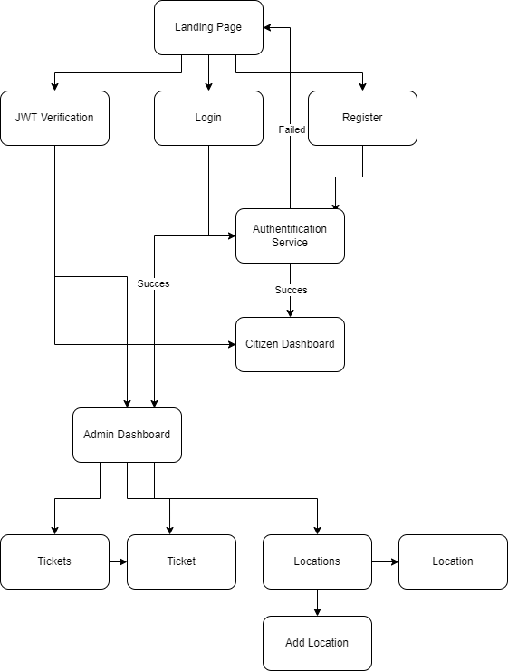
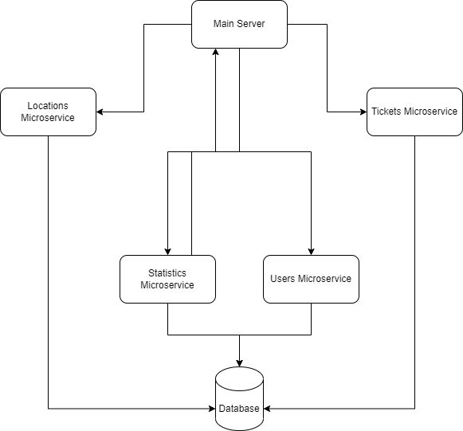

GaMON
Table of contents
1. Introduction
1.1. Purpose
As cities grow it is becoming increasingly difficult for authorities to manage garbage collection and disposal to a satisfying degree. This is why we created GaMON. GaMON is a tool for citizens to help with reporting garbage sightings and for administrators to view those tickets and act on them.
1.2 Intended audience
All citizens who have access to the internet can help by creating an account and submitting tickets for when they are disposing of trash in designated locations. The admin however is the target user, as he has the most power over the application and the applications serves the best purpose to the administrator.
2. Overall description
2.1 Product functions
GaMON's main features are:
- Creating an account and logging in
- Generating tickets submitted by the citizens
- Displaying statistics related to how many tickets are active and how many have been solved
- Displaying recent tickets
- Displating statistics related to the amount of garbage collected
- Viewing locations designated for storing garbage
- Adding new locations designated for the depositation of garbage
- Generating CSV and JSON documents containing reports related to locations and tickets
2.2 Types of users
GaMON allows the existence of two types of users:
- Regular users who can view nearby locations on the map, and submit tickets
- Admin users who can view reports, add locations and resolve ticktes
2.3 Operating environment
The application will run in a browser, on both descktop and mobile platforms, on Windows, Linux, Android, iOS.
3. Frontend Structure
3.1 Technologies
For the frontend part of the project we used HTML5, CSS3 and JavaScript with a few JavaScript libraries such as Leaflet.js and Chart.js.
3.2 Pages
Landing Page
This is the first page that the user will see. Here they can choose to create an account or log in with an already existing one. After creating an account or logging in, the user is redirected to their specific dashboard.
Citizen Dashboard
After logging in, the refular user will be redirected to the citizen dashboard page. Here they will see a map of the general area with markers reprezenting nearby garbage depositation locations. Selecting one of the close locations, the user will be prezented with input fields, reprezenting the quantity of trash the citizen wants to report, coresponding to its respective label.
Admin Dashboard
After logging in, the admin user will be redirected to the admin dashboard page. Here they can view a ticket summary for the past week, trash summary, representig the amount of different types of garbage that has been collected, and the latest unresolved tickets.
Locations Page
In this page the administrator can view the locations currently active where garbage can be deposited and collected. The admin can also export a report of all locations and the garbage collected from them in csv format, as well as add new locations, or disable and enable existing ones.
Tickets Page
On this page the administrator can view all active tickets, both resolved and unresolved. The admin can export a report of all tickets in csv or json format, as well as mark tickets as resolved, or deactivate them.
Location Page
On this page, that is accessed by clicking one of the entries on the locations page, the admin can see the location on the map and a chart representing the amount of garbage reported and collected in that area. This is where the admin can deactivate or activate the location.
Ticket Page
On this page, that is accessed by clicking one of the entries on the locations page, or on one of the latest tickets, the admin can see the map of where the ticket was place, details about the amount of garbage reported and a comment submitted by the citizen. The admin can mark the ticket as resolved. If the ticket is resolved, the admin can deactivate the ticket, removing it from other reports.
Add Location Page
On this page, that is accessed through the locations page, the admin can add a new location to available locations for depositation. The admin can select a point on the map, check which type of trash ca be collected on that site and give it a name, afterwards, it can be submitted.
4. Backend Structure
4.1 Technologies
For the backend part of the project we used
- NodeJS was used to implement most features of the main server and microservices.
- PostgreSQL was used as the database server. We chose to use relational databases due to their performant search.
- JWT was used for authentication.
4.2 Microservices
We structured our project around 4 microservices and a main server. This approach bring many advantages over structuring the application as a monolith, mainly the ability to scale easily and reduced impact of outages, as the other microservices continue to work as expected, even if one fails. Our services are:
- The main server - acts as a gateway for the microservices and handles static file retrieval
- The users microservice - handles authentication and authorization, user CRUD operations and admin operations
- The statistics microservice - handles the retrieval and calculation of statistics and creation of charts based on them
- The locations microservice - handles CRUD operations on locations
- The tickets microservice - handles CRUD operations on tickets
Main server
When a request first arrives to the main server, it has to be authorized. The JWT in the cookies is checked and the request is not solved if the token is not valid and the request is for a non-public resource. Then, if the request is for a static file, it is served, otherwise it is redirected to the microservice that will hadle the request.
Users microservice
This service is responsible for the administration of user data. It handles account creation and login for users, generating the token on a successful login.
Statistics microservice
This is the microservice that communicates with the most other microservices. The statistics microservice receives requests for certain reports and requests from the other microservices informatiton in order to compose a response.
Locations microservice
This is the microservice that handles CRUD operations on locations.
Tickets microservice
This is the microservice that handles CRUD operations on tickets.
5. Communication
Client-server communication is mainly done through HTTP requests to the internal API and public REST services. Requests pass through the main server that either serves a static file, or forwards the request to the matching microservice and sends back the response after it is received from the microservice. Pages are dynamically built throgh AJAX calls to the server based on query parameters and user input.
6. Tasks
Socea Teodor
- JWT based authentication
- Database setup
- Organizing the project as microservices
- Admin functionality
- Admin page
- Security
- Utility functions for easier usage of requests and responses
- Statistics API
- Locations API
- Preliminary MVC structuring of the server
- Citizen functionality
- Parts based backend rendering of the HTML pages
- Login and Register
- Users API
- Tickets API